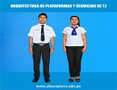
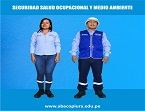
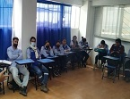
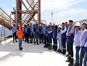
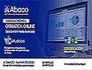

.png) ISTP Abaco - Piura
ISTP Abaco - Piura





36 años Formando Profesionales de Exito
Nuestra Institución ha estado a cargo de varios profesionales que han dejado huella en su loable labor educativa en bien de la Juventud de Piura. Cuenta con una infraestructura educativa moderna equipada con mobiliario acorde para cada especialidad, implementada con medios audiovisuales para el desarrollo de las actividades educativas, ofrece los talleres de computación e inglés así mismo aulas de innovación pedagógica y recursos Tecnológicos que permite hacer uso de la tecnología para mejorar sus aprendizajes
Actualmente elIEST Privado ABACO PIURA dicta las Carreras Profesionales de Arquitectura de Plataformas y Servicios de TI, Secretariado Ejecutivo, Administración de Empresas, Seguridad Salud Ocupacional y medio Ambiente; está dirigida por su Directora Rosa Flores Quinde.